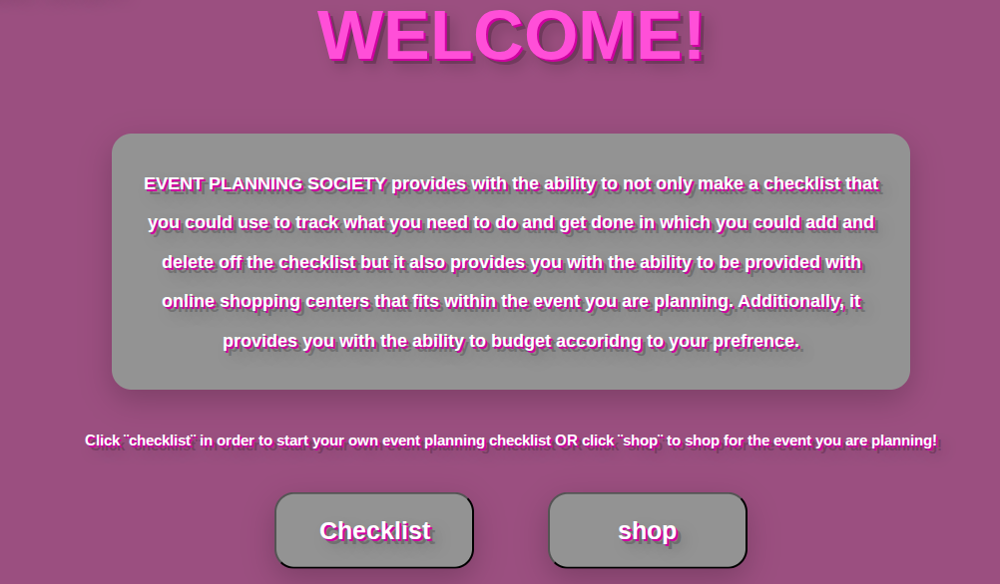

Just like our SEP10 year, we were given a year long project to build. We were able to create anything using the javascript codes we have learned over the year AND a self taught tool to enhance what we will would end up making. This project required lots of steps and planning so that the final result would reflect the past years learning and hard work. We started off by thinking about what to make and by deciding what tool to use through time spent on tinkering the tools we were introduced too. Then, just like last year, we started our proccess with the learning log where throughout the week of every week, we were to update our progress with how we are leaning our tool. After a while, we started coding our projects.
---For this year, I really liked the idea of making a type of checklist. I started to think about what type of checklist I wanted to make exactly. I then decided that I wanted to build a event planner and implement the checklist somewhere in my project. After thinking and seeing what I know I would be able to make, I decided that for my MVP I will make an event planner that has a checklist area for when users checklist a event they are planning and a shop section for users to be able to shop/purchase the materials for the event depending on what they are planning. For my tool, I decided that I wanted to use something that would lighten the tough proccess of coding. So, I chose less css js. Less css js is a javascript tool that provides coders with shortcuts and less dense easy to read css code. In fact the only difference the tool has from regular css is the amount of code that would be written. Adding to the checklist and the shopping section, beyond my MVP I decided to add a budgeting section, where a user could enter the most amount of money they would like to spend and then add a price to everything they are putting in the chechlist. Then the money being tracked will increase if the user deletes a chechlist item or decrease if the user adds something. Another thing I did for my project for beyond my mvp is making my product responsive which is something we learned how to do sophmore year. Building my project aside from using my self taught tool, consisted a lot of DOM codes. I used DOM codes such as event listeners and append and add in order to be able to make the checklist section and budgeting section to behvae according to my plan. For example, I used many event listeners so that the program may detect what button of my content section was being pressed - checklist or shop - and so on. I used append so that when the user is adding the next thing to the checklist then that certian addition is added right under the previous one. On the other hand, aside from using my tool to make my content responsive, I used it to also create the creative visual such as the colors and the text. I knew I wanted all of my content to have a bubble letter effect so I visted the offical website and google often to guide me through what types of less css codes I need to use to make that happen in which I learned I could use less css code such as @primary colors that were functions to be able to resuse the same code over and over again instead of retyping it each time. Overall, my project was built with DOM javascript and less css js.
---Loooking back at my proccess today, I realized that there could have been better and more effecient ways to build it. Although I am satisfied with how my project came to be and how it earned be an honorable mention from the expo presenation. However, reflecting, I could have planned what I wanted to make more smartly. I knew I wanted to build soemthing that had to do with event planning, but I did not think much about what to put for my content. I made the decesion of what I wanted to add for content two months before the projects deadline. This put a good amount of pressure on me. Especially since I like to work slowly. If I were to do this all over again, I would decide what I wanted to put as my content earlier. Reflecting back, I would also have asked my peers around me for tips, feedback, and help. As I watched some of my fellow classmates present their projects and mention how most ideas and issues were tackled from advice stemmed from a friend, it made me realize the value of speaking up and asking for assitance. It also made me realize that the proccess of building my project could have been faster and way smoother. I could have even added more content to what I already had.
Throughout the proccess of my project, there was one challenge that I had the whole time. This took place during the period of beyond the mvp. My challenge had to do with my tool and how to use to tackle a certain issue. This challenge was making my product responsive. The entire time cdoing, I was using absoulute positioning to align my buttons and content. This was an issue because absolute positioning would position the content permentantly on the page. This would mean that if the screen was big or small the content would not adapt to thye page accordingly. Additonally, whenever the page loaded the chechliist and shop button overlapped. To fix my challenge, I used the offical website of css and used google to guide me. I discovered that in order to make my code responsive, the website showed me something called media queries. media queries are used to make certain content adpat depening on the page of the screen. So, I removed absoulute positiong from content such as buttons and anything else that had something positioned next to something else. Then I replaced the code with media queries that positioned certian content to load correctly if viewed from a phone or ipad, etc. Media queries helped fix my checklist and shop section from overlapping and spaced them out from one another. Additonally, media queries were most helpful because they were apart of the less css concepts. Media queries were most helpful because they were a less css concept that were able to use in nesting. This helped me use a shortcut in using then same media queries when nesting instead of having to rewrite the whole thing each time. After implementing the code on certain content that needed to be aligned I refreshed the page and saw the each content was aligned perfectly. SO, using the shortcut codes from the official less css website I was able to overcome my challenge smoothly.
---Overall, my next steps would be to expland my pallette in what I would add to my project. I plan that for my next coding project to create something way more detailed and creative and to build on what I already know in terms of coding. I plan to take these new next steps by thinking about it over the summer such as what I would want to build and how I would want to build it and what would be the purpose of what I will be building. On of my other next steps is to also learn a more challenging tool to gain more skills and expierence.
Link to the project